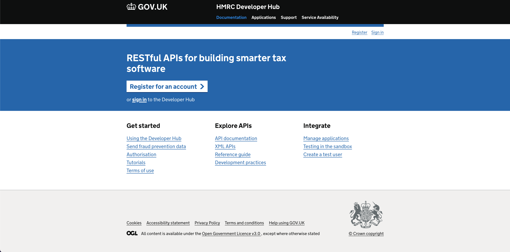

About me
Background
Born and raised in Newcastle! From a very young age at school I pick up a lot of interest in IT as a subject and instantly knew that's what I wanted to focus on learning on. Many years later after learning the basics of IT at school, I joined the Accenture Apprenticeship program to pursue a life in IT and to expand my skills. This was a great opportunity for me to learn on the Job while getting the chance to obtain more qualifications such as an NVQ & a degree at Sunderland University, where I achieved a 1st Class in BSc Digital Technology Solution’s & Software Engineering. Some other key highlights of my working careers is getting the chance to become scrum master certified and winning Accenture Newcastle Apprentice of the Year 2016.
Experiance
- Accenture (8 Years)
- I joined Accenture through their Apprenticeship program where I gained a large amount of project methodology and client interaction experience, from working in both local and distributed agile & waterfall teams. Working at Accenture I have gained a vast amount of problem-solving experience, which includes analysing and deconstructing complex requirements to create and deliver solutions. Utilising relevant techniques and methodologies to support and execute the design, build, and maintenance of applications and assets. I've mainly been a frontend developer over these years working with languages such as HTML, CSS, Javascript, SCSS and Vue.js. However during my 8 years here I have experienced working different areas such as a functional tester, scrum master and an Atlassian admin.
- University (3 Years)
- As part of the Accenture Apprenticeship program I went to Sunderland University during my time at Accenture to study Digital Technology Solution’s & Software Engineering. This course allowed me to get experience and develop my software skills such as web development, cyber security, networking and software design. For example some of my main assignments had me working with HTML, CSS, Javascript, PHP, Java & Adobe XD to build digital solutions for the given assignment briefs. My final dissertation was an investigation into how web mobile impacts people with disabilities and how to build a fully accessible responsive website. My initial finds were when responsive websites were done incorrectly, this had a negative experience when people with accessibility needs used it. This lead to me building a responsive online comic/book store where people could trade their comics and books with other users. This was built in Vue.js/SCSS and met the Web Content Accessibility Guidelines (WCAG) 2.1 requirements. To help show my findings, I user tested it with people with accessibility needs where it received positive feedback. Through hard work I finished university with a first Class (1st).
- A-Levels (2 Years)
- This was the start of my path to a career in IT. It was here where I took IT as a subject at A-Levels which showed me how to build wireframes off requirements, develop websites in Dreamweaver, use the command line, build PC's and load software onto them. It also taught me the basics of how to use excel, write emails and documents.
Case Studies
- Upgraded multiple services & fixed their accessibility issues
- Helped develop service prototypes
- Lead frontend developer on a new HMRC catalog service
- Frontend developer one of the main Eat Out to Help Out services
Upgraded multiple services & fixed their accessibility issues
I was brought onto a HMRC team that had their complete service accessibility tested and failed to meet standards. This was a big service made up of around 8 repositories that all used the old frontend libraries. The frontend code its self was written by backend developers with no experience in frontend development, they had used the old frontend library as guidance. I made a case to the design lead and project manager that the services needed to be upgraded to the latest Government Digital Service (GDS) Design System components in order to be more accessible. Originally there was push back from the design team since the upgrade meant visual changes. However I convinced them it was for the greater good as the newer components had been designed with accessibility in mind unlike the older ones. Teaching them how the likes of screen readers work and how switching to the new frontend library would benefit these and overall improve the user experience.
I was given the task to upgrade all the repositories and to do a complete rebuild using the new frontend libraries. While doing this I would need to assess any accessibility failures that needed addressing before the services went for a retest. One of the challenges I was facing was multiple developers were working in these repositories which meant I had to keep constant communications with the other developers about what was being worked on. If I failed to do this then it would lead to many conflicts as I was rewriting the frontend pages.
I started off by breaking the repositories into phases to make it easier for code reviews, more feasible to communicate what sections were being working on and to make it manage-able for our tester to test the upgrades. In each phase I upgraded the project to use the new frontend libraries, re-wrote the code to use the new components, cleaned the frontend code and ensured each page met the WCAG requirements. During this process I worked closely with the lead designer as there was slight differences in visuals between the old frontend library and the new. Additionally there were cases where the old components were bad for user experience so I raised these issues with the lead designer and worked along side them to improve them using the newer GDS Design System components. Once each phase was complete, I set up meetings with the lead designer, product manager and tester to demo the new upgraded screens with the purpose of gathering feedback. Once the screens were signed off, the phases were sent to the tester where I made sure I was available for any questions they had. During each phase I was always planning in advance about what I was upgrading in the next phase. Making sure I was communicating this information using our dev channels and sprint plannings.
The team have just started sending the repositories for a retest with the accessibility teams. The smaller repositories were sent first where they are successfully passing the accessibility tests and the new-ish look is getting positive feedback across the board.
Helped develop service prototypes
Since we were moving the services from the old frontend libraries to the newer frontend, I noticed all the UI prototypes were using the old frontend components and not the new ones. I raised this as an issue as in the upgraded frontend there are slight visual differences with the newer components compared to the old. This could have caused issues say when user testing, it wouldn't have provided accurate feedback for our newer upgraded services. It could also lead to confusion when demo'ing to the developers on how the design team want pages to be presented, compared to what would actually be produced on the newer upgraded frontend.
After raising this issue, I was instructed to replicate the old prototypes in a new repository with the latest Government Digital Service (GDS) Design System components. This all had to be complete before the next round of user testing as the design team wanted to use the new screens to get more accurate feedback. I also had the additional task of up skilling a HMRC apprentice in frontend.
With deadlines in mind, I delegated the work out between me and the apprentice. We started off pair programming so that I could teach them how to write correct HTML, CSS & JS that met coding standards. Once they picked up suitable knowledge, we split off to work on our own screens so that we were working efficiently to meet the deadline. On some of the screens that were assigned to me, there were a couple of complicated components to recreate which I had to combine a mixture of the GDS Design System components while keeping it fully accessible. I set up regular code reviews and demo's to give constant feedback to the apprentice that helped them learn and grow in the frontend world. This allowed them to pick up more difficult tasks that also helped the work load on me. Since the prototypes could be a source for the backend developers to copy frontend code from, I wanted to make sure the prototype was fully accessibile too. To do this I set up a meeting with the apprentice/Lead designer and taught them how to use tools like WAVE to test their code in browser.
Through teamwork and hard work we met the user testing deadlines and produced a high standard prototype that was demo'ed at the user testing sessions. This allowed the design team to get more detailed, authentic feedback that would allowed them to design and develop a service to meet the users needs.
Lead frontend developer on a new HMRC catalog service
There was an ask for a new service to be built that cataloged API's for external and internal use. This was to hopefully improve peoples user journeys and make it easier for them to find API's. The service was to be designed and built from scratch.
Being the frontend developer lead on this project, I was brought onto the project at the start to work along side the lead designer to help develop the prototype for the new service. When the prototypes were complete I was to develop the frontend for this service with the help of the backend developers. I would have to code review all the frontend work to guarantee accessibility and code standards were being met.
To help maintain a fully accessible prototype that other developers could copy and use code from, I provided guidance to the lead designer in regular calls and review sessions. I found these sessions helpful for my own development as they would go away to learn more about WCAG/accessibility and then show me their findings through their work. It was important we got the prototype complete in a timely fashion as we needed to get it out in front of users testing sessions. To achieve this we set out to make re-useable components and CSS where we could. This also meant if there was a design change, we would only have to change it in 1 place. The new service was made up of custom components that had to be carefully built by me to ensure the accessibility needs were still being met. Once the prototype was complete, I took to the task of making sure what we built in the prototype was being transitioned over into the actual service and helping the backend developers where I could.
The end result was we delivered and released the new service that passed its scheduled accessibility review with flying colours! The service also received good feedback from internal and external teams noting they found the service easier to find and locate API information.
Frontend developer one of the main Eat Out to Help Out services
At the start of the pandemic there was a scheme set up by the government to try and get people to eat out at restaurants in order to boost their revenue during the tough financial time. This was called the Eat Out to Help Out Scheme. I joined one of the main teams as a frontend that was responsible for developing the search and results screens. At the point I joined, the designs had already been complete and development was about to begin.
My job was to develop the screens that had been designed by the design team and to work along side the backend developers, tasked to hook up the backend and frontend. This was a fast pace project where we had weekly releases which meant we had to develop, test and deploy with tight deadlines while delivering high standard/accessible code. With it being a fast pace project, there were new requirements all the time where I had to priorities new features based on what was most useful for users such as a language switch for Welsh users.
At the start of development I realised there wasn't any mobile designs and raised it as a high risk problem since it was going to be a public facing website where users were most likely going to be using a mobile phone. Here I took action to communicate with the designers while developing the frontend to make it fully responsive for all devices and browsers. I used the Government Digital Service (GDS) Design System components to develop the search page and the results page. I also volunteered to code review the other frontend sections of the service. When my tasks were complete I would work with the HMRC accessibility team to help spot and fix any issues we saw. I also took this oppertunity to learn more about accessibility, to advance my knowledge by listening to their guidance and methods of testing.
The launch of Eat Out to Help Out scheme was a success and used by millions of members of British public where it got fantastic feedback. Each day it was used by over 100 thousand users and we barely got any noted bugs which goes to show how solid the frontend and backend code was developed.
Skills
 HTML
HTML
 CSS
CSS
 SASS
SASS
 Javascript
Javascript
 Adobe XD
Adobe XD
 Vegas Pro
Vegas Pro
- Atlassian
- A tool used by agile development teams to track bugs, stories, epics, and other tasks. I was once an Atlassian admin so have experience of how the set up works.
- HTML
- Frontend language that is used to structure a web page and its content.
- CSS
- Frontend language also known as Cascading Style Sheets (CSS) and is used to style webpages.
- SASS
- Sass is a preprocessor scripting language that is interpreted or compiled into Cascading Style Sheets. It enables you to use things like variables, nested rules, inline imports and more
- Javascript
- Frontend language used to make webpages dynamic and interactive. There are many Javascript frameworks, a popular one I like to use is Vue.js.
- Adobe XD
- Adobe XD is a user experience design tool to build out web sites and mobile apps.
- Vegas Pro
- Vegas Pro is a video editing software tool that is used to cut together, edit and render videos.
Contact details
Have a question? Feel free to send me an email.
Or you can find me on these social media pages: